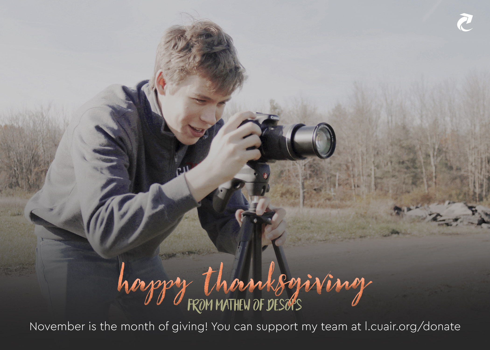
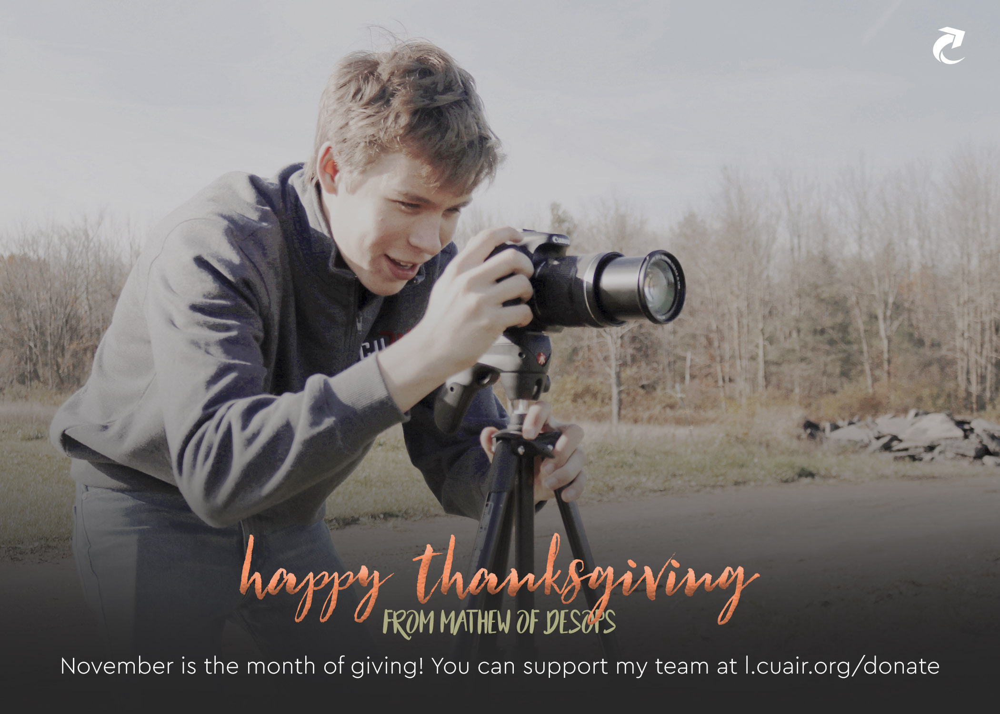

Hi I'm -
And I like love to code.
A little about me...
- Hometown: Northern Virginia
- Undergraduate: Cornell University, College of Engineering
- Interests (technical): Machine learning, prediction in products, natural langauge processing, open-source software, product management, teaching.
- Bare Necessties: Coffee, headphones, laptop, friends
- Favorite Dessert:
Organizations What I do at Cornell

CUAir - Cornell University Unmanned Air Systems
Design and Operations Lead
A student-run team that works on the design, development, and testing of an unmanned aerial vehicle.
Learn more.WICC - Women in Computing at Cornell
Advisor, Board Member, Developer
An organization meant to foster a supportive community of women* and allies equipped with the resources needed to recognize and overcome challenges.
Learn more. Visit the SiteINFO 1300 - Introduction to Web Programming
Teaching Assitant
Held office hours, lead lab discussion sections, and graded projects and labs during weekly meetings.
CAML - Committee for the Advancement of Muslim Culture
Treasurer
Developed the budget for the organization for proposals and helped organize outreach events, game events, and Eid banquet.
CUAir - Cornell University Unmanned Air Systems
Design and Operations Lead
Feb 2017 - present
Who are we? A student-run team that works on the design, development, and testing of an unmanned aerial vehicle. We compete every year at the AUVSI-SUAS competition in Maryland which focuses on the creation of uavs for search and rescue purposes.
The Design and Operations team works at the intersection of business and technology and esentially runs the project team simillar to a start up.
My role on CUAir was initially being the Website, PR, and Outreach Lead where I recreated the website to reflect the project team's structure, works, and aircraft. Over the years I managed several fundraising campaigns such as Giving Day 2018 and Crowdfunding 2019 where we launch a massive campaign to get family, friends, alum, and companies to donate towards our cause so we can take our students to competition and fund (our now) 50-lb plane. Last year I redesigned the website with a better understanding of how to brand CUAir with a new focus on making the website data-driven because most of the information on our website is iterative: members, sponsors, previous aircrafts, alumni, etc and made most html generated by javascript and used libraries like jQuery and d3.
Additionally, lead the Indigo project which is meant to automate and make the experience of sponsoring CUAir much more interactive and well managed.
Currently, my role is to lead the Design and Operations team and ensuring that all projects involved with recruitment, front-end and full-stack development, graphics design, videography, photography, technical writing, marketing, and sponsorship relations is managed.
 

Projects In my free time I like to code

Cornell Clue
CS 3110
Developed Clue in OCaml and used jsofocaml library to make the gui and generated heuristics for opponent stategy.
Travel Node
Hack the Valley 2
A web app that allows you to enter several destinations and returns the optimal route to reach all of those places in the shortest amount of time, and total cost of travel with an Uber.

Serene
sheHacks
A mental health awareness bot to converse with that will appropriately responds, pre-diagnoses, suggests playlists/songs, and locates the right professionals.

Music Tastify
A web application that allows a user to login to Spotify and list top artists of all time and answer the question "What kind of music are you into?".
Cornell CMSX
Worked on CMSX, course management website for Cornell, and helped with the transition to a new backend and frontend framework for better information retrival.
Likely Desirable
Workday
During my second week at Workday, I participated in the Student hackathon and worked on a application that creats cohorts of applicants by calculating their desirability and likeliness index which was done by developing a Machine Learning model to predict the score based on other features such as program of study, scores, etc.
Work Some incredible teams I've been a part of
Software Application Engineer Co-op
Workday
Jan 2019 - Aug 2019 • Pleasanton, CA
Worked on the Student team to design, develop, and test Recruiting and Admissions features. Debugged code to push features into preview/prod and helped interns with their projects and training.
* Engineer of the Month, July 2019
Software Development Intern
OPIS - Oil Price Information Service
Jun 2018 - Aug 2018 • Rockville, MD
Developed two web applications that mapped gas stations by zipcode/point of interest using Aurelia and .NET Core frameworks in an agile environment. Presented to the CEO about introducing a data lake in order to discover new relationships using Machine Learning.
Software Development & Engineering Intern
SC3
May 2017 - Oct 2017 • Alexandria, VA
Worked as a full-stack developer to create a new and efficient onboarding platform. Assessed the risks of development and researched extensively on security solutions and an optimal hashing algorithm.
* Nominated for GDIT Award